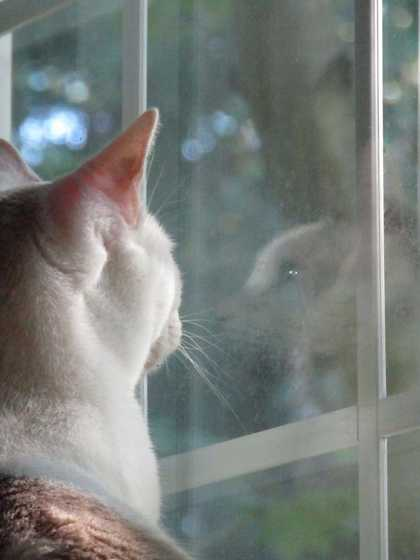
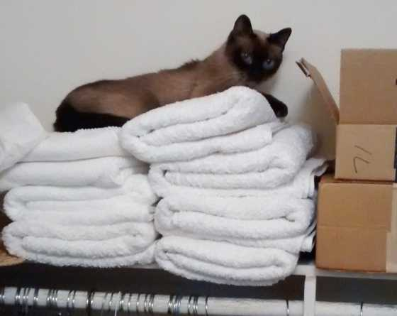
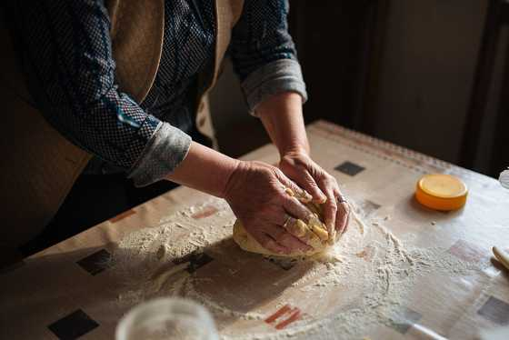
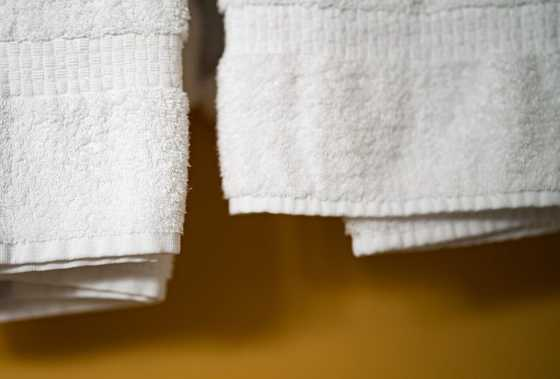

お店のこと
週に2日、焼きたてを届ける
「しろねこのパン屋さん」は、愛媛県今治市南鳥生町にある小さなパン屋さんです。Instagramによると、2025年6月26日にオープンし、営業は火曜日と木曜日(9:30〜15:00)。駐車場もあります。
- オープン2025年6月26日(Instagramより)
- 営業日火曜日・木曜日(Instagramより。変更の可能性あり)
- 営業時間9:30〜15:00(Instagramより。変更の可能性あり)
- 駐車場あり(Instagramのハイライトより)
- 電話準備中
店名の由来や店主の想いは、公開されている情報からは確認できませんでした。ここでは、店名にある「しろねこ」から、白猫のようにやわらかく、ふらりと立ち寄りたくなるパン屋さんというイメージで、制作側がページを組んでいます(お店の考えではありません)。

パン
こんなパンが並びます
Instagramの投稿には、バゲットやライ麦パン、クロワッサン、シナモンロール、サンドイッチ、タルトなどが見られます(日によって変わると思われます)。価格・日ごとのラインナップは準備中です。下の写真はすべてイメージです。



やわらかな日常
ふわり、ほっとするパンを
火・木だけの営業だからこそ、その日を楽しみに足を運びたくなる。そんな想像をふくらませて、やさしい色合いでまとめました(制作側のイメージです)。

口コミ
お客様の声(イメージ例)
イメージ例
火曜に寄れた日は、ちょっと得した気分。クロワッサンのいい香りで、帰り道までごきげんです。
イメージ例
こぢんまりした雰囲気で、気軽に入れました。駐車場があるのも助かります。
イメージ例
木曜が楽しみになりました。サンドイッチを買って、お昼にいただきました。
※上記は制作側が作成したイメージ例で、実際のお客様の声ではありません。
アクセス
お店の場所
〒794-0802 愛媛県今治市南鳥生町2丁目1-5
営業日: 火・木 9:30〜15:00(Instagramより) / 電話: 準備中
Instagram @shironeko_2025(最新の営業情報はこちら)